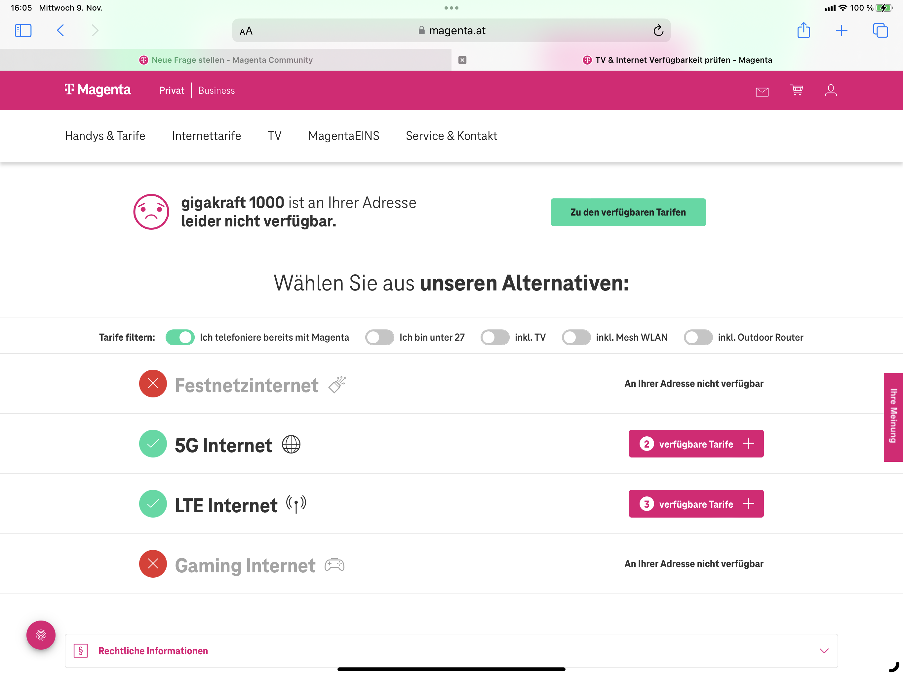

 Heute muss ich mich mal zum Thema Monopolstellung an Standorten.
Warum kann ich kein Kabel,DSL & Hybrid Tarif an meinem Standort abschließen ? Warum bin ich in Österreich an einen einzigen Anbieter geknebelt .
Ich habe doch als Kunde das Recht mir meinen Anbieter auszusuchen den ich möchte. Magenta sagt mir immer wieder, dass an meinen Standort leider keine Möglichkeit gibt mir stationäres Internet zu stellen. Hier sehe ich eine Wettbewerbsverzehrung. In Deutschland kann ich frei wählen wenn ich will an meinem Wohnort.
Hallo @Steffen20 ,
Ist in deinem Haus oder Wohnung eine Telefondose der A1 Telekom Austria vorhanden? Wenn ja,könntest du von Magenta auch die DSL Fix Tarife nützen. In diesem Fall fungiert Magenta als Reseller uns bietet über die A1 Leitung ihre DSL/Internetdienste an.
Informationen zu den Magenta Fix Tarifen findest du Hier
Was für Geschwindigkeit über die DSL bei
dir möglich wäre, kannst du Hier abfragen. Gehe dazu bitte auf dem Punkt "Technikverliebte" um eine Auswertung der Leitung zu erhalten.
Solltest du hilfe dazu benötigen,poste einen Screenshot von den Leitungswerten.
LG
Rexalius
Nein Ich kein A1 am Haus. Nur die Salzburg AG. Preis/Leistung stimmen nicht. Ich möchte gern Magenta in meinem Haus. Habe jahrelang mit der Deutschen Telekom und Magenta nur gute gute Erfahrungen gehabt. Preis/Leistung stimmen einfach. Vor meinem Haus steht ein Mast mit einem A1 Kasten und einem langen Kabel das in die Freie Wildbahn läuft. Sieht auf dem Foto unten. Blanke Kabel (Telefon)
Schaut so aus, dass dieser Kabel irgendwo in der Wildnis vom Kasten endet, schade. Ich habe in meinem Haus zwar eine alte DSL Leitung der A1, die ziemlich stabil seit über 20 Jahren läuft. Allerdings hätte ich auch gerne einen Magenta Internetzugang über Kabel. Würde sofort zu einem. Magenta Koax Anschluss wechseln, wenn ich könnte.
Reines Internet über Mobilfunk kommt aufgrund dem "Shared Medium" für mich nicht in Frage.
Im Bundesland Salzburg bietet Magenta kein Coax-Kabel-Glasfaser an. Und die Salzburg AG muss ihr Netz nicht an andere Anbieter zur Verfügung stellen. Umgekehrt muss auch Magenta ihr Coax-Kabel-Glasfaser nicht zum Einmieten anbieten.
Wenn der Verfügbarkeitscheck hier sagt es würde etwas an deiner Adresse möglich sein, dann könnte Magenta etwas anbieten wenn sie wollen (wenn kein Telefonanschluss im Haus verfügbar ist müsstest du die Kosten für die Verlegung übernehmen).
Vielleicht wird Magenta in nächsten Jahren FTTH in Salzburg ausbauen. Ob dies aber wirklich passiert wird die Zukunft zeigen.
{kind=link}
{kind=link}